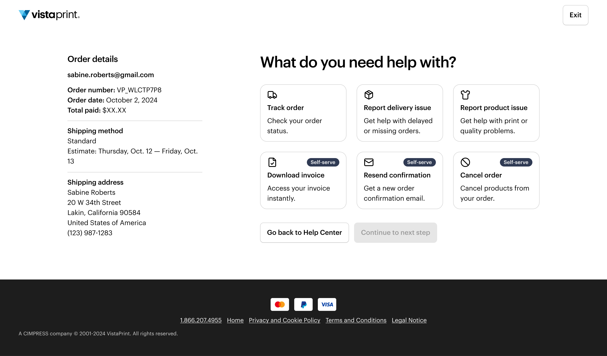
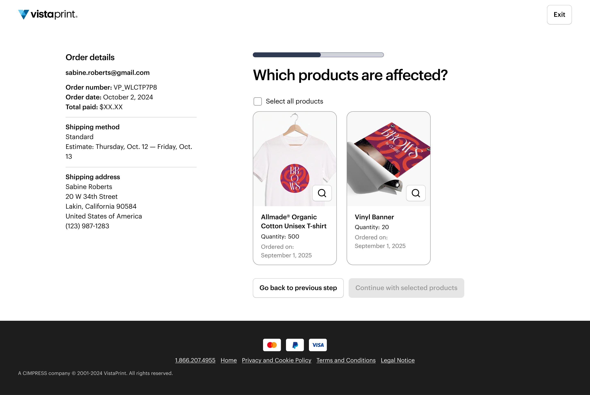
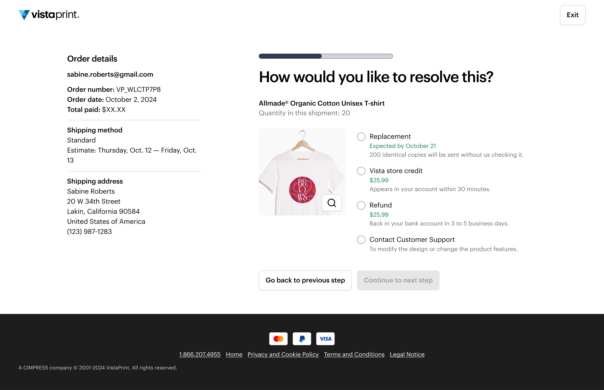
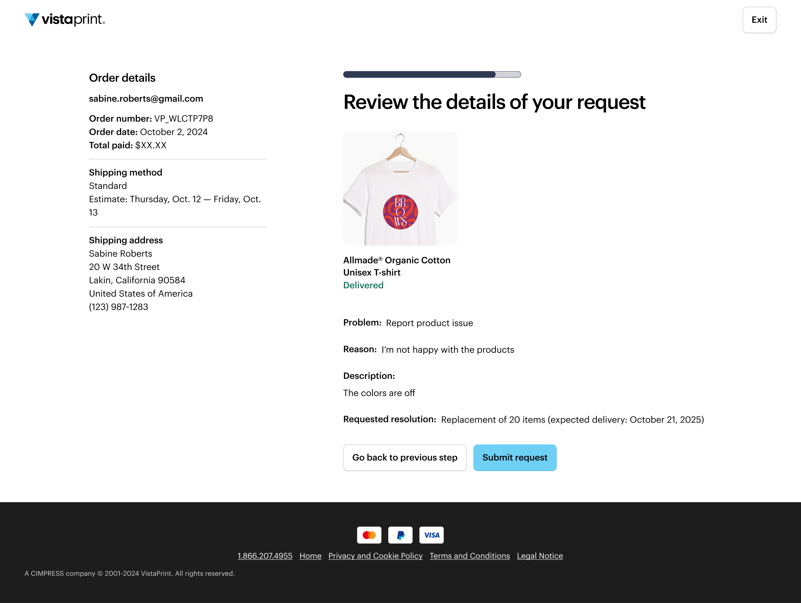
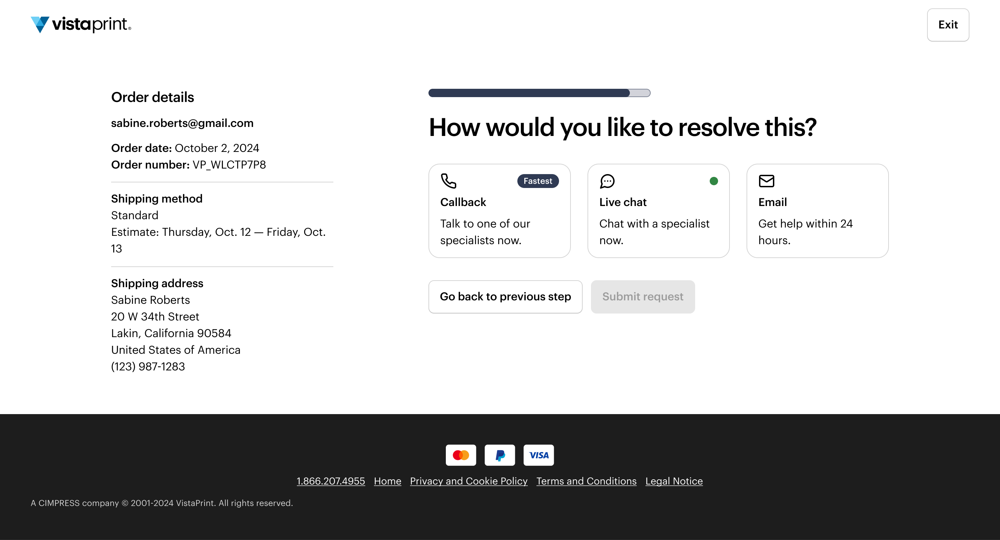
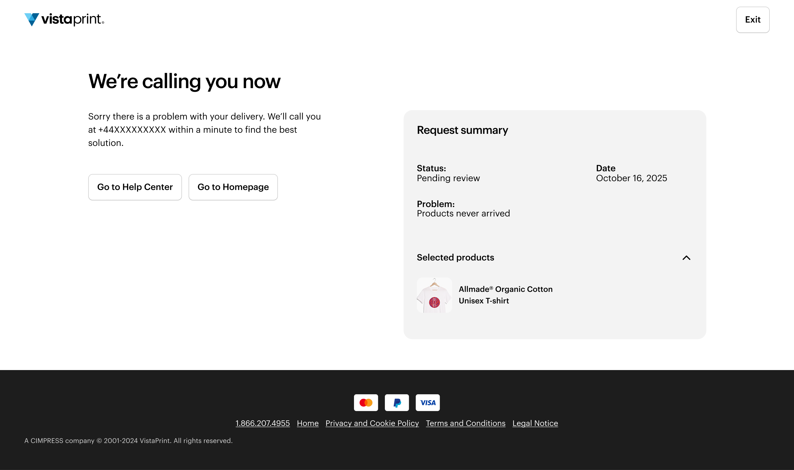

There's more to explore — here are two other projects worth your time.
In December 2024, VistaPrint launched Order Help V1 to enable customers to manage orders without contacting support. Within weeks it was generating a significant increase in unnecessary contacts instead of reducing them — rolled back after one month. Root cause: 82% of users ended up waiting 24 hours for email responses, but the flow didn't reveal this until the final step. Users abandoned and used faster channels, creating follow-up cases.
Diagnose what went wrong and lead the end-to-end redesign and expansion of the tool. Owned discovery, research, design, and testing across all phases. Led discovery independently when PM support was unavailable for the Q2 expansion flows.